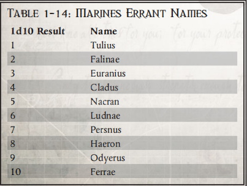
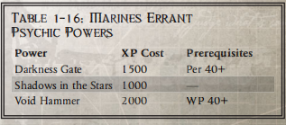

游侠战士
"就像皇帝的恩典和仁慈永无止境一样，人类的领域也必须永无止境。我们必须坚持不懈，让扩张帝国的征战永无止境。"
——马格纳尔-提图斯连长，游侠战士第四连
游侠战士战团一直在进行远征，致力于消灭帝国的敌人，无论他们出现在哪里。自成立以来的数千年间，该战团的战斗兄弟们一直活跃在整个帝国境内，甚至经常远赴境外。该战团展现出了巨大的韧性和灵活性，使其能够参与如此广泛的远征，同时继续狂热地遵循《阿斯塔特法典》。
战团摘要 创立： 第 23 次建军 战团世界： 舰队基地 要塞修道院： 维拉穆斯（基因种子库） 基因种子：极限战士 前身：雄鹰勇士 |
历史
根据他们自己的传统，并通过内政部现有记录的确认，游侠战士成立于 M37 年，是第23次建军的一部分。成立该战团是为了弥补前几千年的严重损失。根据帝国的记录，数十个星际战士战团因各种原因无情地消失了。因此，成立该战团的目的是为了迅速建立一支可靠、战术灵活、有能力在整个帝国进行征战的替代战团。游侠战士从成立之初就秉承了所有这些理念。
从一开始，游侠战士就打算进行无休止的远征，清除宇宙中任何可能冒犯皇帝或干扰人类星际航行的污点。正因为如此，该战团围绕着每个连队独立稳定的理念设计了自己的组织方案。在其存在期间，游侠战士从未建立过正式的要塞修道院，也未指定过特定的家园。相反，该战团几乎没有休息过，其成员四处旅行，不断拓展帝国的疆域。虽然这在一定程度上限制了分配到不同连队的星际战士之间的友谊，但额外的战术灵活性使他们能够很好地履行指定职责。
救赎时代（The Age of Redemption）一直持续到 M37 的大部分时间，在这一时期，帝国国教首次在帝国内部拥有了目前的权威。在此之前的几个世纪里，教会统治逐渐腐败。最终，这种腐败被发现并推翻。随着领导层的更迭，对神皇的信仰日益成为帝国生活中的重要元素。许多热衷于信仰的人认为，有必要为过去几个世纪所犯下的滔天罪行进行忏悔。对一些人来说，唯一可以想象的适当的服务就是开始讨伐污染银河系的外星异端势力。
通过最初几个世纪的组织，游侠战士战团是这个时代的产物。它的战斗兄弟们参加了无数次远征，其规模从仅针对一个星系内的几个世界到横跨整个子星系的大规模战争不等。在参与这些为弥补帝国过去的罪孽而进行的无数努力的同时，该战团不断向那些人类未曾涉足的地方证明他们作为守卫和战士使者的价值。
在 390.M38 至 433.M38 年间，游侠战士战团与行商浪人伊卡莱尔家族签订了一份盟约。签订协议的原因至今仍是双方严守的秘密。不过，当时形成的联系显然依然存在。时至今日，在伊卡莱尔家族的舰船上，仍有游侠战士战团的战斗兄弟在执行分遣队的任务。可能是他们当时约定的任务尚未完成。不过，也有可能是该战团欠了行商浪人的血脉一些债务，而这些债务在一生都无法偿还。为伊卡莱尔家族服务是战团成员的荣耀。服役者在返回战团后的很长一段时间里，都会继续在盔甲上佩戴游侠徽章。许多人还身着华丽的动力装甲或装备，这些装甲或装备是家族赠送给他们的礼物。
M40 年初，游侠战士战团的五个连组成了卡德伦远征队的核心军事要素，进入了哈泽洛斯深渊。这次远征由水审判官领主卡德伦率领，被认为是一场无妄之灾。在这次远征中，只有一艘战斗驳船幸存了下来。在旅途中，战团损失了大部分兰德掠袭者、无畏和众多具有亚空间航行能力的运输舰，以及无数战斗兄弟。如果不是系统地储存基因种子，该战团可能无法从损失中重建。即使增加入团人数，游侠战士战团也可能会因不可替代的装备损失而痛苦千年。
该战团最近参加了科林斯远征，打击科林斯星系内的Waaagh! Skargor的科林斯远征。在极限战士战团长马里乌斯·卡尔加的领导下，远征军消灭了兽人帝国，并在数十年内有效消除了异种对该地区的威胁。在战争期间，第四、第六和第九连在极限战士第三连被优势巨大的兽人舰队压制时将其解放，赢得了极大的赞誉。游侠战士的战斗兄弟们参与了对数十艘斯卡戈尔恐怖战舰的登船行动，为极限战士部队提供了他们所需的救援，从而扭转了战局。马里乌斯·卡尔加甚至慷慨地将奥特拉玛神圣的遗物之刃之一授予该战团，以示友情。
杰里科边区的著名游侠战士 以下是来自游侠战士战团的著名星际战士。 技术军士奥威尔-多门斯 埃里奥克要塞（Watch Fortress Erioch）在杰里科边区上屹立了不知多少年。尽管机械修会齐心协力，但随着时间的推移，要塞的许多技术已经年久失修。在被派往死亡守望后，技术军士多门斯立即发现其中一些失灵的系统与他之前在战团的众多宝藏中研究过的文物相吻合。其中大部分都是在大远征过程中发现的物品，不过其中许多都是在相隔千年、银河系截然不同的地方发现的。 自初到以来，技术军士已成功修复了守望要塞的多个瘫痪系统，使其在一定程度上恢复了功能。这些修复工作的长期影响尚不清楚——他完全有可能修复了某些设备，使其不再发挥最初的功能。然而，由于多门斯对此类考古技术的高度精通，他在守望要塞与机械神殿的代表密切合作，既研究这些技术，又分析从阵亡敌人身上回收的异种技术。 老兵兄弟多纳尔·哈格 在过去的 23 年里，哈盖斯修士一直担任埃里奥克要塞狩猎场的监督员，协助狩猎大师管理训练场。在他任职期间，无数异种被引入狩猎场，数以百计的星际战士在狩猎队的整合训练中杀死了它们。由于哈盖斯除了履行杀戮小队成员的职责外，还要承担这些任务，因此他必须依靠其他战斗兄弟的努力，帮助识别和捕获适合现有环境的异种。 为了更好地获取所需的异种标本，哈盖斯一直密切关注着守望要塞上的动静。有人说，他经常在杀戮小队的任务下达之前，就知道他们可能会去哪些星球。他经常拜访准备执行任务的杀戮小队，要求他们捕获某种生物，以便在狩猎场使用。作为补偿，他经常可以提供一些生物的解剖学知识--这是他为了履行对狩猎场的责任而不得不学习的信息。 |
家园
由于他们是一个在整个帝国——而且经常是在帝国边界之外——旅行的远征战团，因此游侠战士没有资源也没有必要维持一个传统的家园。相反，他们的战斗驳船是指挥行动和协调战团的主要地点。当有必要在开始远征之前集结多个连队时，移动基地能为战团提供更大的灵活性。
不过，游侠战士战团在成立过程中也需要解决一些限制因素。其中最关键的是为他们的基因种子找到一个安全的储存地点。即使是一艘强大的战斗驳船，也可能在大规模的讨伐行动中丢失或毁坏。与更稳定的行星体相比，这些飞船还要承受更严重的亚空间和潜在污染。正因为如此，战团指定维拉摩斯为基因种子存放地。这座要塞拥有巨大的动力护盾、防空激光器和少量守备部队。之所以选择这个世界，还因为它的位置被认为相对稳定，不会受到亚空间入侵。当一个连队因远征或重大损失而必须重建兵力时，通常会加入维拉穆斯的守备部队，以便为这个世界增加一层防御。
由于游侠战士需要花费大量时间进行积极的远征，因此独立运作的连队必须能够在战场上招募新兵。这样，他们就不需要等到返回母星后才能补充在战场上失去的战友。因此，战团从帝国无数人类居住的世界中招募新兵。对于许多新兵来说，太空海军陆战队的生活是他们了解自己遥远世界之外的银河系的唯一机会。在接受训练的过程中，这些年轻的战斗兄弟在学习新战团的仪式和技术的同时，也了解了帝国的真正本质。
基因种子
游侠战士战团对自己的基因种子格外敬畏。卡德隆航程中遭受的损失更加坚定了这一信念。该战团的指挥部深知其成员随时都可能遭受巨大损失，因此采取了非常措施来确保基因种子供应——作为其延续的最重要组成部分——得到安全保存。他们在维拉穆斯建立储藏堡垒的主要目的就是确保将这种风险降到最低。同样，该战团拥有比法典要求更多的药剂师。这些成员负责维护储存库，并确保及时从年轻的战斗兄弟身上采集原生腺体，然后送往维拉摩斯安全储存，直至需要时才取出。
在他们的历史中，这一理念一直是应对本会作为一个远征战团所面临风险的有效措施。游侠战士战团曾多次需要补充一个连以上的星际战士。至少有一次，对游侠战士来说，找到新兵和可用的基因种子比他们安装必要的动力装甲和找到可用的老兵进行训练还要容易。
正如其成立之初的意图一样，游侠战士的基因种子保持稳定，没有任何变异或污染的迹象。其纯度毋庸置疑。有传言称，由于其稳定性和相对丰富性，它可能已被用于创建至少一个额外的战团。
维拉摩斯的陷落 战锤 40,000》中描述的休伦·黑心对维拉摩斯的突袭发生在 M41 年，晚于《死亡守望》中使用的 817.M41 年。海军陆战队游侠战士的角色尚未遭受这一残酷的损失，因此没有理由知道它的发生。在《死亡守望》游戏中，该战团拥有充足的基因种子。 如果游戏时间较晚，这场灾难可能是最近发生的，甚至可能发生在游戏过程中。失去几乎所有的基因种子储备代表着一场巨大的灾难，它可能会让游侠战士逐渐走向灭亡。得知这场灾难的玩家角色或生活在灾难之后的玩家角色，很可能会因为新发现的 "战团死亡感 "而在观念上发生重大改变。 |
游侠战士与死亡守望 通常情况下，星际战士在死亡守望服役的时间长短是预先确定的。然而，由于他们的部署范围很广，要想在特定的指定时间返回自己的连队，往往是一件具有挑战性的事情。他们的连队目前的部署情况可能不明，也可能位于银河系中与太空海军陆战队当前值班站距离极远的地方。为了应对这一困难，来自游侠战士的战友们可能会在其最初指定的任期结束后长期为死亡守望队效力。然后，当他们的连队再次到达一个已知地点，且距离合理时，他们可以立刻返回自己的战团服役。 |
哲学
"皇帝对人类的指导是无止境的。原体通过法典汲取的智慧无穷无尽。我们的警惕必须与他们的榜样相匹配"。
——奥古斯特-杜兰牧师
游侠战士自成立以来，一直致力于开展无休止的远征。从历史上看，游游侠战士也曾派出连队协助行商浪人家族、其他星际战士战团，甚至响应整个银河系的行星紧急呼叫。这种随时随地援助人类事业的意愿充分体现了他们的奉献精神。
为了完成这一使命，游侠战士试图保持尽可能广泛的影响力。他们的连队经常独立执行任务，分散在银河系的各个角落。为了实现这种分散，每个连的指挥官都是一艘攻击舰的指挥官。这些舰艇通常是巡洋舰，不过战团的舰队中也有几艘轻巡洋舰和一艘战列巡洋舰。为为了使这些连队能够独立运作，除了正常的星际战士编制外，每艘舰艇都配备了一个车辆库。战团的每艘飞船都由第 1 连和第 10 连的成员补充。这样，每个连队都能获得战团资深战斗兄弟提供的专业知识，并有机会训练新兵和利用他们执行渗透任务。这种方法的一个副作用是，新招募的成员往往在下一次重大集会之前无法全面了解战团的情况。为了克服这一问题，许多新成员在完成培训之前就被调到了另一个连队。这样，不同连队之间就能保持一定的联系。
只有在准备重大征战或战团重要活动时，各连才会聚集在一起进行长时间的交流。这些场合是老兵们与其他连队的战友重聚的唯一机会，这些战友往往是他们在入团时认识的朋友。这些聚会也是连队之间晋升和调动的机会。通过这种方式，晋升到第一连的成员可以调到其他连队工作，这样他们作为星际战士老兵的经历就更容易区分。这也是星际战士最常见的服役时间，包括在维拉摩斯驻军、伊卡莱尔家族甚至死亡守望服役。
替换一个连队是一个极其困难的过程。除了重新分配和征用极其稀有的武器、车辆和装甲外，游侠战士还必须获得一艘巡洋舰。机械修会可能需要几个世纪的时间才能提供一些基本装备，而其他要求可能永远无法满足。在这种情况下，所有其他连队都应提高入伍率，以便将已建立的星际战士分给新连队。不幸的是，有好几次，当一个连队被替换后，原来的连队又奇迹般地从长期征战中归来。这导致游侠战士每次都拥有 10 多个连队和远超 1000 名成员。正因为如此，几乎不可能在任何时候准确估算该战团的总资产。
游侠战士角色 游侠战士是阿斯塔特中一支英勇善战、恪尽职守的分队，他们时刻准备着证明自己对皇帝的忠诚，并投身于人类夺回星辰的斗争中。虽然这在某些方面限制了他们的行动，但却赋予了他们前所未有的海军行动技能和空战知识，超越了许多兄弟战团。游侠战士可获得以下益处： +5敏捷、+5力量、"普通知识：帝国海军 "技能和 "零容忍”单人模式能力。 举止：资产牧羊人 资产牧羊人 "是 游侠战士战团中的星际战士特有的举止。 游侠战士星际战士深知他们的连队分散，无法像其他更强大的战团那样在任何时刻都能动用同等数量的资源或人力。这在一定程度上是由于游侠战士的远征性质，以及数百年来远距离战争对每个分散战斗小组的军事物资造成的损失。正因如此，游侠战士变得非常善于调配自己的资源，即使是损坏最严重的装备也能保存和修复。此外，分散在各舰队中的技术军士也是重新利用在战场上获得的装备和物资资产的高手。虽然这种行为引起了人们对科技异端的担忧，但这些怀疑仍未得到证实。即便如此，游侠战士仍然认为他们的武器装备比大多数人都要珍贵，他们知道，有限的供给就是他们战役的命脉。作为一名游侠战士，他知道自己的职责是为皇帝尽忠而死，但他也知道，不惜一切代价保住自己的武器装备是他对所属战团的责任，如果他死了，他必须确保所属战团能在他力所能及的范围内收回武器装备。只有这样，战团才有机会继续为帝国服务千年。 |
作战原则
作为极限战士的光荣继承者，游侠战士会尽可能严格遵守《阿斯塔特法典》。他们对法典教义的主要改动都是为了赋予该战团更多的灵活性，以履行他们作为持久征战者的职责。除了这些改动之外，该战团仍然热衷于基利曼的核心战斗哲学。
这一战术的核心体现在他们一贯使用的联合武器上。他们保持必要的灵活性，以应对几乎任何对手。虽然突击小队、破坏者小队和侦察小队的使用符合法典的规定，但它们的人数比例却得到了谨慎的保留。在可利用的范围内，根据情况需要使用车辆资产。由于这些资源并不总是随时可用，突击小队经常被用来代替轻型车辆，而破坏者则扮演大多数星际战士坦克更常见的角色。游侠战士没有最喜欢的对手。他们曾与异种、异端甚至混沌的爪牙进行过无数次战斗。无论对手是什么类型，该战团的星际战士都恪守法典的教诲，冷静地消灭那些胆敢与人类帝国作战的人。与那些专注于学习最有效的方法来战胜特定目标的战团成员相比，这种方法确实使战团在对付某些敌人时能力较弱。不过，这样做的好处是，他们不会对敌人的特定战略抱有太大期望，也不会倾向于使用自己的特定战略，而且这种战略还可能是可预测的。由于游侠战士遭受的损失，他们在装备上往往比较保守。重型坦克、无畏和最稀有的装备只有在特定情况下绝对需要时才会使用。游侠战士在多次征战中损失惨重，无力再承受更多的损失。在某些情况下，这可能会导致星际战士在战场上的装备不如理想。然而，通过对《星际法典》的虔诚和理解，游侠战士坚信他们有能力战胜任何对手。
显然，由于技术兵的专业技能，游侠战士会采取极端措施来修复在战场上损坏的任何装备。在无数次征战中的一些幸运发现，也让该战团得以重新获得一些原本无法替代的装备。一些传言称，一些战斗兄弟可能会极端使用异种武器，但这些传言都没有得到证实。
游侠战士过去
| 1D5结果 | 过去经历 |
| 1 | 异种技术： 游侠战士经常极度缺乏补给，就像他们的战斗兄弟一样。这可能是由于舰队只有一小部分物资在手，也可能是由于时间给战团带来的巨大损失。为了赢得战斗或为战团服务，当战团的武器和装甲无法使用时，你们就会使用异形技术。虽然你们的指挥官已经接受了这种必要性，但如果其他人知道了你们的过失，他们可能就不会那么宽容了。 |
| 2 | 甲板军官： 许多游骑兵也在自己的战舰上担任军官和船员，并学习了许多海战知识。您曾在战团的攻击巡洋舰或战列舰上担任过甲板军官，了解此类战舰在战斗中的功能。 |
| 3 | 远征： 游侠战士参加了银河系中的无数次远征，战团成员为解放新的空间区域和夺回曾经属于帝国的空间而战斗。您是其中一次远征的老兵，在服役期间赢得了远征勋章和荣誉。 |
| 4 | 一击脱离： 登船行动是一项血腥的工作，虽然在战斗中用突击艇突袭敌舰是常有的事，但很少有人能为自己的行动赢得荣誉。您是一次大胆的登船袭击敌舰行动的幸存者，在同伴眼中赢得了荣誉，身上的伤疤也证明了您的勇敢。 |
| 5 | 舰炮手： 正如许多游侠战士担任军官一样，其他人也从下层甲板学习舰船的运作。您曾在战列舰或攻击巡洋舰的火炮甲板上服役，了解过此类舰艇使用的巨型大炮和光矛炮台的工作原理，以及如何指挥庞大的奴仆和仆从队伍维持舰艇运转。 |

游侠战士原体诅咒：远征召唤
游侠战士是皇帝的忠实仆人，他们从不拒绝武装的召唤或加入讨伐帝国敌人的机会。几个世纪以来，这已成为该战团众所周知的一面，从东部边缘的阴暗深渊到恐怖之眼周围的黑暗动荡地带，游侠战士成员参加了银河系中数以百计的远征。作为一个以舰队为基础的战团，这意味着整个战团几乎从未在同一时间出现在同一地点，尽管他们可能会保持联系，但每个战团都是一个连队及其舰船的集合体，可以在很长一段时间内独立行动。虽然这意味着战团分散在各个星域，但没有任何一个游侠战士成员会拒绝这样的使命召唤，并将他们的战团拥有如此英勇的历史视为一种荣誉和骄傲。
1 级（无尽勇气）： 战斗兄弟对其战团的英勇历史和奉献精神充满自豪，并将自己的存在视为延续其传统的重要部分。当他的杀戮小队被要求履行职责时，他会确保职责得到履行，压制战友们可能产生的任何疑虑或在荣誉面前可能表现出的任何软弱。第一次面对恐惧等级的敌人时，战斗兄弟必须进行一次挑战性（+0）意志力测试。如果失败，他们就会在遭遇战中获得狂热天赋，并必须努力消灭造成恐惧的敌人。在此期间，他们不能启动或使用任何小队模式能力。
2 级（职责永恒）： 真正的责任只能用死亡或同样强大的牺牲来证明，这是所有真正的神帝仆人都知道的事实。战兄知道，为了证明自己，他必须挺身而出，挡住刀锋或保护战友免受爆炸的伤害，让人们对他的奉献精神和对皇帝的忠诚没有任何怀疑。在使用 "小队模式 "能力时，如果战兄可以选择为同伴承受伤害或命中，或为他们提供自己的反应（如 "浸入火力 "或 "战术间隔 "能力），他就必须尽可能这样做。
3 级（带头冲锋）： 在登船行动中，最先通过船舱、最先面对敌人的人将获得最大的荣誉。战斗兄弟认为他必须承担这一角色，因为这是他的荣誉要求，也是在同伴眼中证明他的勇气和忠诚的另一种方式。如果有领导冲锋或第一个面对敌人的选择或机会，战兄必须抓住。此外，他还会寻找这样的机会，主动承担危险的任务，只要这意味着他能带领其他人加入战斗。在战斗中，战兄也会寻找看起来最危险或最强大的敌人，甚至不惜忽略距离更近或更紧迫的敌人。
| 中文 | 英文 | 消耗 | 类型 | 先决条件 |
| 指挥 | Command | 100 | 技能 | |
| 指挥+10 | Command+10 | 200 | 技能 | 指挥 |
| 指挥+20 | Command+20 | 300 | 技能 | 指挥+10 |
| 导航（星际） | Navigation(Stellar) | 100 | 技能 | |
| 导航（星际）+10 | Navigation(Stellar)+10 | 200 | 技能 | 导航（星际） |
| 导航（星际）+20 | Navigation(Stellar)+20 | 300 | 技能 | 导航（星际）+10 |
| 航行（太空飞船） | Pilot(Space craft) | 100 | 技能 | |
| 航行（太空飞船）+10 | Pilot(Space craft)+10 | 200 | 技能 | 航行（太空飞船） |
| 航行（太空飞船）+20 | Pilot(Space craft)+20 | 300 | 技能 | 航行（太空飞船）+10 |
| 良好声誉（帝国海军） | Good Reputation(Imperial Navy) | 300 | 天赋 | 交际50、同伴（帝国海军） |
| 同伴（帝国海军） | Peer(Imperial Navy) | 300 | 天赋 | 交际30 |
| 天赋异禀（航行） | Talented(Pilot) | 500 | 天赋 |
游侠战士单人模式能力
“零容忍 "是一种新的单人模式能力，适用于 "游侠战士 "的战斗兄弟。
零容忍
行动： 自由行动
所需等级：1
效果 游侠战士接受过大量的舰载战斗训练，擅长登船行动以及各种环境和危险。战斗兄弟对在微重力或零重力环境下作战，以及在硬真空太空或炙热寒冷的虚空中作战都毫不畏惧。他还了解自己的武器在这种环境下的工作原理，以及确保其可靠使用和准确性所需的祈祷和咒语。在太空环境（低重力或无重力，以及不同程度的大气和压力环境）中战斗时，战斗兄弟会将所有因环境影响而导致的测试惩罚减半。
提升： 等级 4 时，战斗兄弟的零重力战斗技能已臻完美，可以忽略空间环境造成的所有测试惩罚。等级 7 时，战斗兄弟不仅不再受到太空环境和可变重力的阻碍，而且还学会了如何利用这种环境为自己带来优势，并永远不会因这种环境而降低移动速度。
游侠战士小队模式能力
以下 "小队模式 "能力是来自游侠战士的角色所独有的。
游侠战士攻击模式：封闭战斗
行动：半行动
代价：2
持续： 是
效果： 在船对船的登船行动中，游侠战士小队经常需要在狭小的空间内作战，穿过狭窄的走廊或从舱壁的裂缝中发起攻击。虽然这项技能在太空作战中最有用，但它也可以应用到任何情况下，即战斗兄弟必须在几乎没有回旋余地的情况下肩并肩作战。战斗兄弟和在他支援范围内的人不会互相遮挡火力线，也不会因为挡路而导致命中受惩罚。此外，即使通常没有足够的空间，战斗兄弟也可以在移动过程中相互穿插或转换位置。
改进： 等级 4 的战斗兄弟可以在近战中互相帮助，即使他们可能无法接触到敌人；任何进行近战攻击的战斗兄弟都可以为与其相邻的其他战斗兄弟获得 "群殴 "奖励（参见《死亡战士》核心规则手册第 248 页），即使他们无法对敌人进行近战攻击。在等级 7 时，使用小队模式能力的战斗兄弟在密闭空间内战斗时不会减少移动速度。
游侠战士防御姿态：保护阵亡者
行动 反应
代价：1
持续： 是
效果： 为了保存战团的基因种子，游侠战士必须关心每一位在战斗中倒下的兄弟，无论他是否还能存活，都要保护他的身体。专门的杀戮小队可以利用这种训练保护他们的阵亡者不受伤害，或减轻伤口对已受伤者的可怕影响。在支援范围内的战斗兄弟及其杀戮团队的任何成员都可以保护他们的兄弟免受重创，方法是在倒下的兄弟与伤害之间穿插自己。当该能力激活时，战斗兄弟可以使用他的反应移动最多两倍于他敏捷值的距离来保护他小队中的另一名成员免受攻击，前提是该成员已被击倒和/或已遭受重创。如果战斗兄弟的移动足以接近该成员，则战斗兄弟将被攻击击中，并承担所有正常后果。以这种方式保护兄弟的战斗兄弟不能闪避攻击，但可以作为反应的一部分进行格挡。如果攻击的影响范围会同时影响战斗兄弟和他试图保护的小队成员，那么该小队成员就会获得掩护，以抵御攻击，其躯干位置上的护甲值等于战斗兄弟的护甲值。
改进： 使用此能力的5级战斗兄弟最多可以移动四倍于其敏捷值的距离，以接近倒地或重伤的队员。
游侠战士灵能力量

黑暗之门
行动：3全行动
对抗：无
范围：自身
持续： 否
描述：唤起扭曲世界的强大能量，图书管理员在虚空中折叠点与点之间的空间，并在瞬间拉近它们的距离，允许太空骑兵在它们之间穿行。黑暗之门的效果类似于远距传物室，可以通过经脉通道将物体从一个点快速传送到另一个点。它只对一小群人有效，而且只能穿越像虚空这样的无空气空间，但它可以有效地发动突袭。图书管理员和与其心灵感应等级相等的人数都能受到这种能力的影响。智库在太空中选择一个他可以观察到的点，例如一艘遥远的飞船。只要在他能看到的点和他所站的点之间没有障碍物或大气层，一扇门就会瞬间打开，允许他和他的同伴穿过。两点之间的距离可达灵能等级 x 500 千米。
使用这种能力时，"亚空间危险 "尤其危险。如果智库触发了 "亚空间危险"，则滚动 1d10 x 500km 来确定距离，而不是使用他的 "灵能等级"。如果他是 "引导"，那么距离就是 3d10 x 500km。
星影
行动：半行动
对抗：无
范围： 1000km x灵能等级
持续： 是
描述 智库可以眺望漆黑一片的虚空，看到传感器无法看到的东西，读取黑暗的起伏与流动，以及隐藏在黑暗之下的亚空间。图书管理员可以进行挑战性（+0）感知测试，以感知此能力范围内的任何空间物体，包括天体现象和船只或军械。根据这些物体的大小和密度，游戏管理者可以在测试中给予图书管理员 +10 到 +30 的加分。即使测试失败，游戏管理者也应让智库对危险有一个大致的了解，但不是确切的位置。如果该能力与舰桥船员一起使用，他们将在所有涉及舰船传感器的测试和避开危险和弹药的驾驶测试中获得 +30 加分。
虚空锤
行动： 半行动
对抗：无
范围： 10 米 x 灵能等级
持续： 唤起野蛮的能量爆发，智库以原始的精神力量击碎物体并撞击建筑。对个人，这种力量可以将他们击倒并打断他们的骨头，但对无生命的物体，它可以将墙壁撕裂，将舱壁扣住。图书管理员在射程和视线范围内选择一个点作为虚空之锤的打击点。该点 3 米范围内的任何人都会被冲击波击中，除非他们能通过闪避测试成功跃出。被击中的人将受到相当于智库灵能等级 x 3 的冲击伤害，并且必须通过挑战性（+0）敏捷测试，否则将被击倒在地。墙壁、支撑物和门等物体受到的影响要严重得多，会受到相当于 1d10 x 灵能等级（忽略护甲值）的冲击伤害。如果造成的伤害足以摧毁物体（如舱壁），就可以用它在物体上打洞（形成直径 3 米的裂口），或者通过摧毁支撑物来摧毁建筑物。该能力还可以有效地用于攻击车辆，就像破坏舱壁或防爆门一样破坏车辆。
游侠战士装饰
远征勋章
许多游侠战士成员一生中都曾参加过帝国的远征。加入死亡守望的成员通常都是参加过此类光荣战役的老兵，他们的盔甲上都佩戴着他们英勇事迹的徽章。远征勋章有多种形式，有的是绘制在战兄动力装甲的挡板或支架上的标志，也有可能是固定在武器、胸牌或头盔上的勋章。这些信物的存在标志着战斗兄弟是一名远征战士，会增加同伴对他的尊敬，但也会疏远其他人，因为每次远征都会有巨大的胜利和惨痛的失败。
游侠战士战兄可以选择将远征勋章作为其初始装备的一部分，以反映他加入死亡守望之前的情况。如果他这样做了，他可以选择使用这些勋章来改善他遇到的那些可能参加过远征或听说过远征事迹的人的处置能力。如果他这样做了，那么GM应该掷一个d10：1-3时，NPC没有听说过远征；4-8时，NPC参加了同一次远征或对那些参加过远征的人有很高的评价，并将他对战斗兄弟的态度提高一个等级；9-10时，远征对NPC有黑暗的意义（他在远征中失去了太多的兄弟，或者远征让他想起了一件可耻的事），他对战斗兄弟的态度降低一个等级。